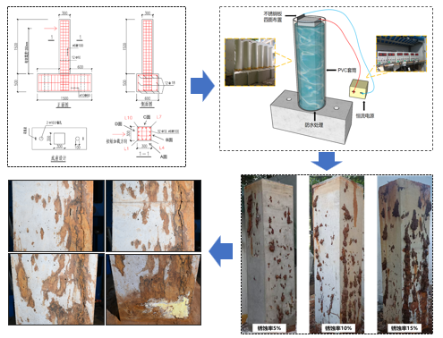
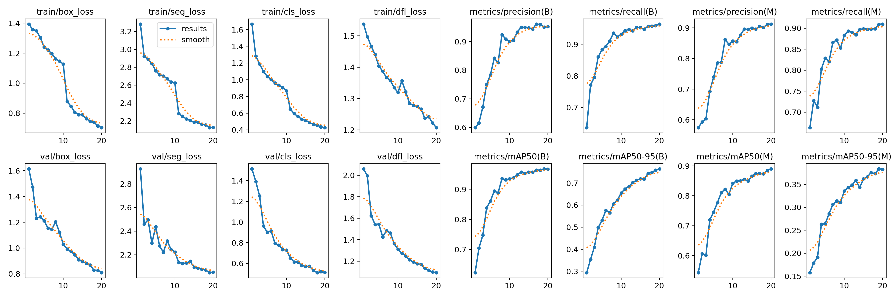
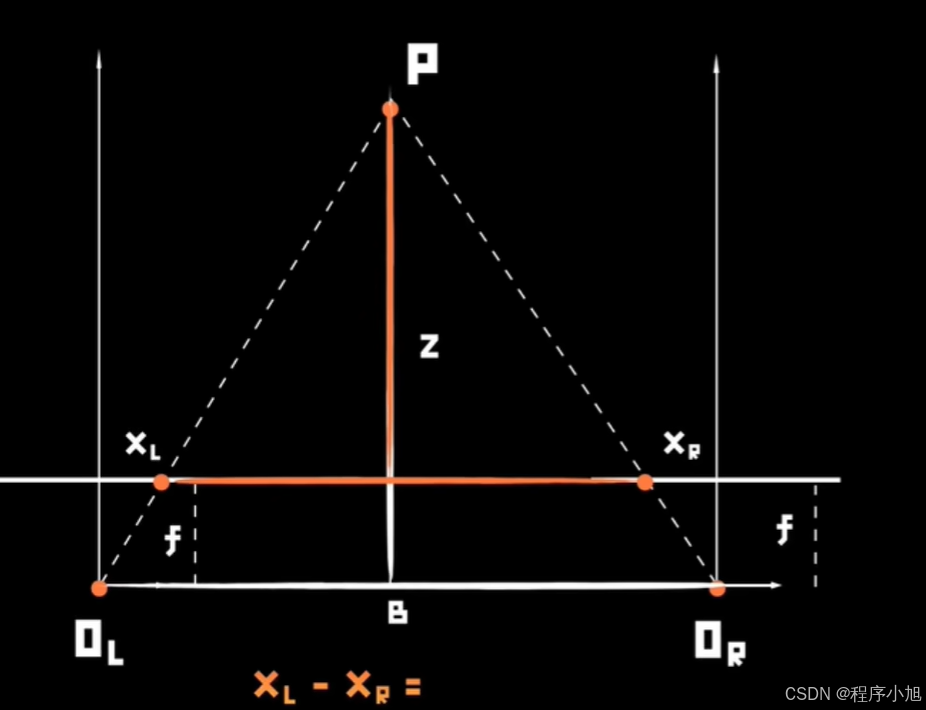
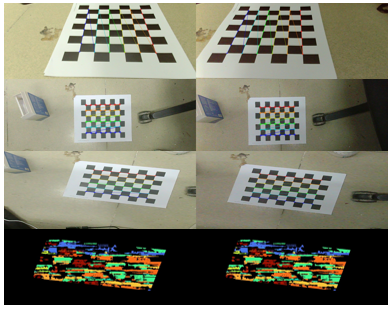
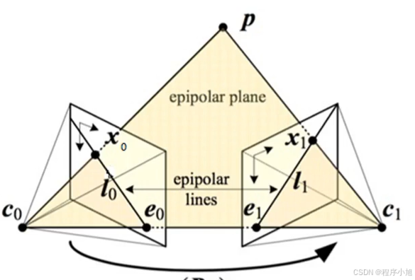

数据集制作
针对锈蚀钢筋混凝土柱开裂性能进行试件设计，采用电化学加速锈蚀获取锈蚀试件， 对通电结束后的表面裂缝进行拍照记录，并通过数据增强扩充训练样本。
裂缝宽度变化能反映混凝土结构的安全状态。传统人工巡检依赖测宽仪和人工记录， 存在 效率低、成本高、结果受经验影响 等问题， 难以形成连续在线监测数据。
系统把 YOLOv8-seg 裂缝分割、双目深度测量、 CM4 边缘推理 和 Web 仪表盘 串成完整链路， 让裂缝从"被看到"进一步变成"可测量、可保存、可联网展示"。
第三章说明系统如何从裂缝图像出发，完成 数据集制作、 YOLOv8s-seg 训练部署 和 距离变换测宽。 这部分是"看见裂缝"到"量化裂缝宽度"的核心算法链路。
针对锈蚀钢筋混凝土柱开裂性能进行试件设计，采用电化学加速锈蚀获取锈蚀试件， 对通电结束后的表面裂缝进行拍照记录，并通过数据增强扩充训练样本。
系统选用 YOLOv8s-seg，单次前向推理同时输出边界框和实例 mask。 训练权重导出为 ONNX，并在 CM4 上通过 OpenCV DNN CPU 后端推理。
对二值 mask 计算裂缝像素到背景边缘的距离，在距离图上提取骨架点， 以骨架点距离值的两倍作为局部像素宽度，再结合双目深度换算毫米宽度。


双目立体视觉通过左右相机视差恢复场景深度，将 YOLO 提取的 像素宽度 换算为 物理毫米宽度。流程涵盖标定、校正、匹配、深度换算四个环节， 并引入 逐点深度精修 解决斜拍场景的深度不一致问题。
张正友棋盘格标定获取左右相机内参 K、畸变 D 和相对位姿 R/t，通过 Bouguet 算法将旋转均分到两相机， 结合去畸变和行对准生成重映射查找表，使左右图像共面且极线水平对齐，匹配搜索从二维降为一维。
校正后对左右目灰度图做 CLAHE 增强弱纹理，送入半全局块匹配算法计算视差图。 SGBM 引入全局平滑约束 P1/P2 对视差跳变做惩罚，输出亚像素精度视差图。
Q 矩阵将视差重投影为三维坐标 Z(mm)，滤波后裂缝 mask 区域内取深度。 每个宽度采样点独立查询自身坐标的深度值，逐点换算 wmm = wpx × Z / fx， 近远端不再共享统一深度。


